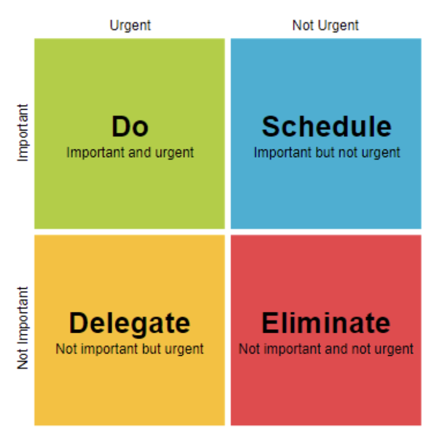

AI Vanity Metrics
25/08/2025
AI adoption in software development is accelerating, but so is skepticism among developers. Management often celebrates impressive numbers, but many engineers see through these vanity metrics that look good in presentations but don't reflect the reality of building software.
Counting lines of code generated by AI is a common example. Management may report a large percentage of code written by AI, but more code is not necessarily better. AI can produce verbose, redundant or buggy solutions, increasing maintenance costs.
Ticket closure rates and sprint velocity are often cited. Closing more tickets does not guarantee that the right features are delivered or customer problems are solved.
Claims about time saved per developer can also be misleading. The time saved is often spent debugging or rewriting AI-generated code, reducing actual benefits. Similarly, adoption rates and flashy demos can look impressive without proving real value or scalability.
Better indicators of AI's value include bug rates, avoided defects, code review burden, and overall cycle time from idea to production. Security issues, maintainability, scalability and technical debt are also critical, as is developer satisfaction. If engineers are productive, creative and supported, AI adoption is genuinely adding value, if not, the tools are failing.
Developers resist when AI adoption is justified by meaningless numbers and when hidden costs like review time, debugging and technical debt are ignored. As one developer wrote in Reddit: "AI sort of becomes a management tool, not a developer tool". Vanity metrics create friction by making AI a selling proposition rather than a productivity boost.
AI can significantly augment development, but only if companies measure meaningful outcomes. Leaders should ask whether AI improves reliability, reduces time-to-market, addresses customer needs and expectations and genuinely boosts developer productivity.
Shifting from vanity metrics to actionable metrics is essential. Only then can AI move from hype to genuine impact.
Small Batches
02/08/2025
In the book "The Lean Startup", Eric Ries presents a compelling argument for working in small batches, an idea that seems simple on the surface but has far-reaching implications for how we approach technology and operations.
The principle is straightforward: instead of building large, complex systems or features in one go, break the work into small, testable, and releasable chunks. Ship early. Learn fast. Repeat.
To illustrate this, Ries uses an example from a traditional office setting. Imagine you need to send out 100 newsletters. One approach is to fold all 100, then stuff all 100 into envelopes, then add stamps to all 100. The other approach is to fold, stuff, and stamp one newsletter at a time. The second method, despite seeming slower, is almost always faster overall. Why? Because problems are identified sooner (a misfit envelope, a missing component), and the process becomes more efficient with real-time learning and iteration.
This logic applies directly to IT. Working in small batches allows you to:
- Deliver software incrementally through Agile methods
- Test and deploy frequently via CI/CD
- Make controlled, reversible infrastructure changes
- Detect and resolve issues quickly due to a smaller change surface
Small batches create faster feedback loops, reduce risk, and encourage continuous improvement. They help teams stay aligned, deliver value sooner, and adapt to uncertainty with more confidence.
By contrast, big batch approaches delay learning, compound complexity, and increase the likelihood of failure.
Whether you're writing code, managing infrastructure, or launching new products, adopting a small batch mindset can lead to better outcomes across the board.
Why a Great Tech Lead Doesn't Have All the Answers
31/07/2025
There's a widespread belief that a tech lead needs to have all the answers, but in reality, the best tech leads know that their strength lies in asking the right questions, not in being the sole problem-solver.
A tech lead's role goes beyond technical decisions, it's about guiding the team, aligning with the business, and fostering collaboration across departments. Trying to provide all the answers often stifles team creativity and slows growth. When the lead always jumps in with a solution, it creates dependency and discourages others from thinking critically. But when a tech lead says, "I don't know - what do you think?", they empower the team to take ownership and grow their problem-solving skills.
It also prevents burnout. Carrying the weight of every decision is unsustainable and pulls a lead away from strategic thinking. Sharing responsibility and trusting the team builds a more resilient, innovative culture.
Ultimately, a great tech lead isn't the one who knows everything. It's the one who listens, guides, and creates space for others to thrive. Leadership isn't about having all the answers, it's about helping the team find them together.
The Backlog Is Not a Dumping Ground
27/07/2025
In Agile teams, the backlog is supposed to be a clear, focused list of work that drives real value. But more often than not, it ends up as something else entirely different: a dumping ground for every idea, request or feature anyone has ever mentioned.
It usually starts like this: someone says "let's just throw it in the backlog", over time, this becomes the norm. Every suggestion, every edge case, every feature that might be useful someday gets logged and forgotten. No one knows what's in there anymore, no one is sure what matters.
This isn't just a mess, it's toxic to productivity. When the backlog becomes unmanageable, the team loses focus, decision-making slows down, planning gets harder, developers pick up stories that lack clarity or purpose and stakeholders feel ignored because their input disappears into a black hole. And the worst part, it becomes impossible to tell what is truly important.
Agile is built on the ability to respond to change - but ironically, a cluttered backlog makes that harder. Teams become less confident in adjusting direction because the backlog offers no guidance. It's just noise.
Backlog grooming should be a regular and collaborative process, not a solo admin task. It's where clarity is created and bad ideas die, so that the good ones can move forward.
If your team starts treating the backlog as a tool for focus, not storage, everything changes. Planning gets easier, prioritization becomes clearer and Agile starts to feel like it should.
Agile And Mini Waterfalls
24/07/2025

We say we're doing Agile. We run sprints, estimate story points, hold stand-ups… but are we actually being Agile?
Too often, Agile is reduced to a checklist of rituals. What we end up with is a bunch of mini waterfalls: design > dev > test, all squeezed into a sprint. Locked scope. Delayed feedback. Progress measured by ticket completion, not value delivered.
Agile isn't about speed. It's about learning fast, adapting often, and delivering what matters.
If your team can't clearly explain why they're building something, or if change feels like a disruption instead of an opportunity, you're not being Agile, that's just process without purpose.
Five Whys
23/07/2025
The Five Whys method is a simple but powerful tool used to identify the root cause of a problem by asking
"why?" five times in succession. It was originally developed by Sakichi Toyoda and became a foundational
part of the Toyota Production System and lean manufacturing practices.
The process starts with a clear statement of the problem. From there, you ask "why did this happen?" and
then continue asking "why?" for each answer you get. The idea is that each answer brings you closer to
the underlying cause, not just the surface symptom. You usually reach a root cause by the fifth "why"
but it could take more or fewer steps depending on the situation.
Example: The car won't start.
1. Why? - The battery is dead.
2. Why? - The alternator isn't working.
3. Why? - The alternator belt is broken.
4. Why? - The belt was worn out and not replaced.
5. Why? - The car wasn't maintained on schedule.
Root cause: Poor maintenance practices.
The Five Whys is best for straightforward problems. For more complex ones, it's often combined with other
tools, but on its own, it's a great way to get past quick fixes and understand what really needs to
change.
Backup
22/07/2025
"A backup isn't a backup unless you've tested it."
Startup Productivity
19/07/2025
"Startup productivity is not about cranking out more widgets or features. It is about aligning our
efforts with a business and product that are working to create value and drive growth.” Eric Ries - The
Lean Startup
In traditional companies, productivity is often measured by output, how many features are built, lines of
code written, or products shipped. But Ries is arguing that for startups, this kind of raw output
doesn't necessarily mean progress.
Startups operate under extreme uncertainty, so building a feature that nobody uses, or improving a
product that doesn't solve a real problem, is a waste of time and money, even if the team was
“productive" in a traditional sense.
Before building something, ask:
- Does this help us validate a hypothesis?
- Will it improve the customer experience in a meaningful way?
- Is it aligned with what's actually driving traction?
If the answer is no, it might be productive activity, but not productive progress.
Delegation and the Eisenhower Matrix
15/07/2025

The desire to stay on top of everything often leads to a common trap: doing too much, too personally.
True leadership isn't about doing it all, it's about doing what matters most and maximize impact. This
is where delegation becomes not just a skill, but a strategic necessity.
The Eisenhower Matrix offers a simple framework to help leaders decide what to act on, what to plan, what
to delegate, and what to eliminate. It categorizes tasks along two axes: urgency and importance. Tasks
that are both urgent and important should be addressed directly. Important but not urgent tasks like
strategic thinking and team development should be scheduled and protected. But the most overlooked
quadrant, especially by leaders, is the one filled with tasks that are urgent but not important. These
are the perfect candidates for delegation.
Effective delegation isn't about offloading work, it's about multiplying impact. When leaders hold onto
everything they become bottlenecks. Delegating frees up time for higher-level thinking while creating
growth opportunities for team members. It builds trust, accountability, and resilience within a team.
Of course, delegation requires more than simply handing something off. It means providing clarity on
expectations, outcomes, and authority. It also requires letting go of perfectionism and trusting others
to deliver, sometimes differently, but often just as well, or even better.
The 4 Types of Organizational Culture
07/07/2025

Walk into any organization, and you'll start to feel it immediately: the way people talk to each
other, how decisions are made, what gets celebrated, what's considered normal. That's culture. It's
not written on walls or in policy documents, it's in the rhythm of how things actually get done.
While every workplace is unique, decades of research suggest that most cultures fall into one of
four generic types. Each type has its strengths, its tensions, and a distinct way of
shaping how people work.
Clan Culture
In a clan culture, the workplace feels more like a community - or even a family. Relationships matter.
Teamwork and loyalty are at the core. Leaders act as mentors or coaches rather than commanders. Feedback
tends to be open and informal, and decisions are often made through collaboration rather than hierarchy.
These organizations prioritize internal cohesion and long-term development. You're likely to hear
conversations about trust, shared values, and growing people from within. This type of culture thrives
in settings where stability comes from connection rather than control - like early-stage startups,
nonprofit organizations, or companies with a strong people-first ethos.
Clan culture isn't just about being "nice". It's a deliberate strategy: when people feel seen and
supported, they often perform at their best. The challenge comes when a business starts to scale or
compete aggressively - without structure or sharp decision-making, things can stall.
Adhocracy Culture
If you're working in a place where every week brings a new experiment or bold idea, you're likely in an
adhocracy culture. These environments thrive on innovation, agility, and a healthy dose of risk-taking.
Speed matters. So does originality.
You won't find much bureaucracy here - processes are lightweight, and roles may be fluid. The emphasis is
on creating new things, whether that means breakthrough products, disruptive business models, or
experimental ways of working. Leadership is visionary and entrepreneurial, and failure is seen not as a
threat, but as part of the creative process.
Adhocracy cultures are often found in fast-moving tech firms, design agencies, or forward-thinking
R&D teams. They're magnetic for creatives and problem-solvers, but they can burn people out or
collapse under their own chaos if not balanced with some structure and clarity.
Market Culture
In a market culture, success is defined by performance. This is the world of targets, KPIs, competition,
and relentless execution. It's outward-facing - customers, competitors, and market share are top of
mind.
The language is about outcomes, goals, and winning.
Leadership here is strong and decisive. People are rewarded for what they achieve, not just how they get
there. There's often a sense of urgency and accountability. These organizations tend to scale well and
dominate markets - but the tradeoff can be high pressure and less focus on internal cohesion.
Think of sales organizations, consulting firms, and large enterprises competing at a global level. Market
cultures can drive incredible results - but they need to ensure that people don't feel like cogs in a
machine.
Hierarchy Culture
Then there's hierarchy culture: structured, formal, and process-driven. Here, the organization is built
for consistency, efficiency, and risk management. Rules, roles, and procedures are clearly defined.
Success is about doing things right - on time, within scope, and according to plan.
Hierarchy cultures are often found in government institutions, hospitals, large manufacturers, or any
organization where predictability and control are crucial. Leadership is managerial - focused on
coordination, performance monitoring, and smooth operations.
The advantage of this culture is reliability: things work, and risks are minimized. The downside is that
it can become resistant to change or innovation unless there's conscious effort to create space for new
thinking.
These four culture types don't just describe companies in theory.
They explain real tensions we see every day: people vs. profit, innovation vs. stability, collaboration
vs. competition. No culture type is "best". Each one can thrive or fail depending on the context and
leadership.
These types stem from a model called the Competing Values Framework (CVF) by Robert
Quinn and John Rohrbaugh.
It maps organizations across two dimensions: one that contrasts flexibility vs. stability, and
another
that contrasts internal focus vs. external focus. The intersection of those tensions gives rise
to the four culture types.
But culture is rarely static. Many organizations shift over time - or blend elements from more than one
quadrant. A fast-growing startup may begin as a clan but gradually adopt market-driven traits. A
hospital may primarily function as a hierarchy but foster a clan dynamic within care teams.
Communication breakdown
02/07/2025
When major systems go down, we often point to a misconfigured script, a faulty deployment, or a routing
error. But if we look more closely, the real culprit is often much more fundamental: a breakdown in
communication.
In the past few years, we've seen this pattern play out in high-profile outages at Atlassian, Facebook,
and Slack - companies known for engineering excellence. Despite having top-tier infrastructure, each of
these organizations faced cascading failures made worse by internal misunderstandings, unclear
responsibilities, or missing escalation paths.
In April 2022, Atlassian experienced a severe outage that affected over 400 customer sites - some for
nearly two weeks. The root cause wasn't a novel technical failure, but a routine deletion script that
was misunderstood. The parameters were wrongly set, and different teams had differing assumptions about
the scope and safety of the operation. Without a clear handover or validation process, live customer
environments were accidentally taken down. The recovery effort was slow, not due to lack of expertise,
but because the communication channels and documentation weren't aligned to handle such a situation
swiftly.
In October 2021, Facebook went dark globally for six hours. The trigger was a change to network routing
configurations, but the real issue was the lack of internal alignment on failure scenarios. The update
removed Facebook's services - including internal tools - from the internet. With critical systems
offline, teams couldn't communicate, access internal dashboards, or even enter the data centers. A
single misjudged assumption about rollback procedures and internal tool independence turned a manageable
change into a complete operational paralysis.
Slack's January 2021 outage followed a similar theme. A misconfiguration in internal traffic routing
triggered widespread degradation just as the world was returning from the holidays. During the incident,
different engineering teams held conflicting mental models of what was failing. This misalignment led to
duplicated effort, delayed diagnosis, and inconsistent messaging to customers. The systems were complex
- but the real challenge was creating a shared understanding fast enough to respond effectively.
These incidents show us that technical excellence alone isn't enough. In complex, fast-moving
environments, the quality of internal communication - before, during, and after an incident - is what
determines resilience. Systems fail. What matters is how we talk to each other when they do.
Communication is infrastructure.
Observability vs Monitoring
26/06/2025

There's a lot of talk about observability these days, and it's easy to confuse it with monitoring. But
the difference really matters - especially as systems get more complex.
Monitoring is about tracking known things. You define metrics and thresholds, set up alerts, and wait to
be told when something breaks. It's reactive. You already know the kinds of problems you're looking for,
and you build tools to catch them.
Observability, on the other hand, is about answering questions you didn't know you'd need to ask. It's
about understanding how your systems behave, diagnosing the unexpected, and making smarter decisions
based on real data - not assumptions. It's a proactive and exploratory approach to understand the
internal state of a system by examining its external outputs.
In practice, observability is about putting the right structures in place to see and understand what your
systems are doing - all the time, not just when things go wrong. You start by identifying which metrics
actually matter for your business and your users - like response times, error rates, or system
throughput. Then, you instrument your code to capture useful logs, traces, and metrics. Tools like
OpenTelemetry can help make that process more consistent.
From there, you build dashboards that highlight what's important and set alerts that trigger on real
issues, not noise. Popular tools like Prometheus, Grafana, and the ELK stack make this possible, and
platforms like Datadog or New Relic can bring everything into one place.
But tools alone aren't enough. Observability has to be part of how the team works. That means using data
in retros, reviewing patterns after incidents, and making decisions based on what's actually happening
in your systems - not just what you hope is happening.
When observability is done right, your team detects and solves problems faster, your systems run more
reliably, and decisions get made with more confidence. You spend less time guessing and more time
improving. And instead of reacting to issues, you start anticipating them - and building better systems
because of it.
Observability isn't about collecting more data or spinning up endless dashboards. It's about clarity.
It's about helping your team ask better questions, spot issues early, and stay aligned with what really
matters - both technically and to the business.
Technical Debt
23/6/2025
Technical debt is inevitable, but manageable. When left unchecked, it doesn't just affect your codebase,
it affects your people, delivery, and business.
Technical debt gradually erodes team productivity and slows down development cycles, making it harder to
ship features or iterate quickly. As the codebase grows, the likelihood of bugs and defects
increases-undermining product quality and user trust. Delivery timelines stretch, and the time-to-market
for new features suffers.
Beyond the technical realm, debt can lead to stakeholder frustration, especially when delays or
instability affect customer experience. It raises maintenance costs and diverts resources from
innovation, reducing your ability to adopt new technologies or scale effectively. Over time, this
misalignment between business goals and technical reality introduces risk-whether through security
vulnerabilities, platform limitations, or strategic inflexibility.
Addressing technical debt proactively is essential to maintain agility, reduce operational drag, and keep
the focus on building value.
There are different types of Technical Debt:
- Dependencies: Outdated or hard-to-maintain tools/libraries.
- Patterns: Poor design choices that cause recurring issues.
- Redundancies: Duplicated logic or fragmented systems.
- Abstract Elements: Unclear goals or shifting requirements.
- Legacy Templates: Inefficient scaffolding holding teams back.
- Concept Debt: Building unused or unnecessary features.
And different strategies to tackle and prevent it:
- Automate and update dependencies.
- Prioritize refactoring and enforce design reviews.
- Audit and consolidate duplicated components.
- Align abstract ideas with concrete business value.
- Modernize outdated templates and practices.
- Validate feature ideas early-only build what matters.
- Use agile workflows to identify issues early.
- Invest in code quality (reviews, pair programming, static analysis).
- Keep teams trained and current.
- Foster cross-team alignment.
- Design for change-anticipate growth.
- Schedule time to refactor and clean up.
Technical debt isn't just a tech issue. It's a business issue. Managing it well is a competitive
advantage.
Lessons from Working with LLMs
20/2/2025
I've been actively exploring large language models (LLMs) and chatbots, particularly since the release of
DeepSeek. Working with them both in the cloud and locally, I've applied them to various scenarios-from
software development and finance to mentoring, data analysis, and even travel planning.
Recently, I was analyzing a very large dataset and ran into a roadblock: the file size was simply too
large for the LLM to process effectively. I tried several approaches-cleaning, transforming,
compressing, and even splitting the data into smaller chunks. In essence, I was adapting my problem to
fit the tool.
Then, in one of my iterations, something unexpected happened. The LLM itself suggested that perhaps I was
using the wrong tool for the job. And it was right. I was so focused on making the problem work within
the constraints of an LLM that I overlooked more suitable solutions.
It was a classic case of "when all you have is a hammer, everything looks like a nail." This experience
was a great reminder that while LLMs are incredibly powerful, they are not a one-size-fits-all solution.
Choosing the right tool for the task is just as important as understanding the problem itself.
Conway's Law
28/1/2025
"Any organization that designs a system will produce a design whose structure is a copy of the
organization's communication structure."
This principle is more than just an observation; it's a strategic insight. The way teams are structured
and communicate within an organization profoundly impacts the systems, products, and services they
deliver.
Team organization is an ongoing process that must evolve with the business. Revisiting and refining team
topologies is essential to maintaining alignment and achieving success.